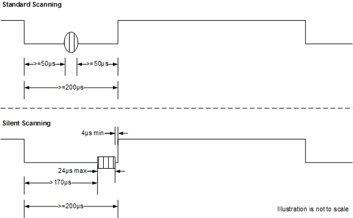
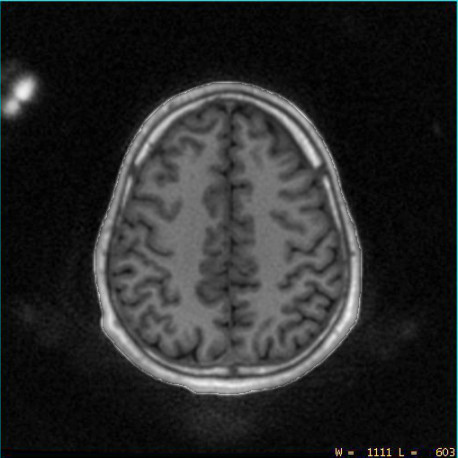

- 00000018WIA3063A030GYZ
- id_123749471.9
- Oct 11, 2021, 7:47:43 PM
Silenz Theory
Silenz is an available option that reduces the sound generated during scans without a significant effect on image quality. For example, comparing a 1.5T clinical BRAVO T1-weighted sequence to a Silenz T1-weighted sequence, there is more than 25 dB less sound within the bore, making the sound of the scan barely audible over the ambient sound of the MR system (within 3 dBA of ambient sound with patient cooling turned on).
Silenz eliminates ramping gradients up and down during a scan, eliminating most of the noise from the scan. This technique requires the width, shape, and timing of RF pulses to be different than those used for standard imaging techniques. The differences in RF pulses require UPM boards with a higher sampling rate than those used on standard DV systems.
Systems Supporting Silenz
Silenz is currently available only on MR450w GEM and MR750w GEM systems where the silentmr option key is installed.
Systems with the Silenz option have updated Universal Power Monitor (UPM) boards.
If the UPM boards installed in the system are not compatible with Silenz, an error will occur during Guided Install. If the Silenz option is installed on a system that has incompatible UPM boards, Guided Install will automatically uninstall the option.
Quiet MR (Acoustic Noise Reduction, or ART)
There is a difference between Quiet MR (also known as Acoustic Noise Reduction, or ART) and Silenz. ART is a different scanning sequence that operators can select to produce scans with lowered noise. When using the Silenz application, customers use ART scans to produce an overall quieter patient experience.
When the silentmr option key is installed, 2D FSE, 2D T1Flair, 2D T2Flair, 2D SE and 3D Cube will have high level ART support
Coils Supported for Silenz Scans
Currently, Silenz supports the following coils:
| Coil | Manufacturer |
| GEM Head Neck Unit (HNU) | GE Healthcare Coils |
| 8-Channel HR Brain Array Coil | Invivo |
| GEM Flex Large Coil | NeoCoil |
Changes to UPM Boards for Silenz
In Silenz scans, the RF pulse width is considerably shorter (8 µs to 28 µs) than the pulse width used in standard MR scans. Instead of the sync pulses used in standard MR scans, Silenz uses rectangular pulses. Also, Silenz scans use a shorter time between the end of the RF pulse and the unblank signal (4 µs) than standard MR scans. These differences require UPM detector and processor boards with a higher sampling rate than those used in standard DV systems.
The following illustration shows a rough comparison between a standard RF pulse and one used for Silenz with respect to the unblank control signal.

| This UPM board for standard MR systems: | Is replaced by this Silenz-compatible UPM board: |
|
UPM Detector Board PN 5250034 |
Quiet RF Detector Board PN 6250264 |
|
UPM Processor Board PN 2359518-2 |
Quiet MR UPM Processor Board PN 6250266 |
UPM boards are not interchangeable between standard and Silenz systems.
-
TPS reset will fail if the system is configured to use Silenz-compatible UPM boards but has standard UPM boards installed.
-
TPS reset will not fail if the system is a standard system but has Silenz-compatible UPM boards installed.
The system checks for the presence of Silenz-compatible UPM boards and will fail a Silenz scan if it detects that standard UPM boards are installed.
UPM calibration procedures for Silent systems are the same as for standard systems.
Improving Contrast and Signal-to-Noise Ratio (SNR)
An image from a Silenz scan is constructed from free induction decay (FID) data (TE ≈ 0) with data acquired from the center of k-space. Due to transmit-to-receive switch time, several points in the center of k-space cannot be obtained. This causes lower contrast and SNR than those created using a standard MR scan. To improve the image quality, another, low-resolution scan is performed in silent scan to obtain the missing data from the center of k-space. Combining information from these two types of scan allows the system to create high-resolution images with the contrast and SNR of a standard scan without the noise associated with standard scanning techniques. The system integrates the low-resolution scan with the Silenz scan and users may not notice it at all.
Image “Artifacts” During Silenz Scans
Silenz does not introduce artifacts into the anatomy shown in scan images. However, because Silenz scan sequences use a TE ≈ 0, scan images may show signals from coil housings or pads. These signals do not intrude into the anatomy, so they are not considered image artifacts.
From their training, customers should be aware these kinds of “artifacts” are possible when performing Silenz scans.
The following illustration has been enhanced to emphasize the signals from the coil. In the original image, these signals are less obvious.
